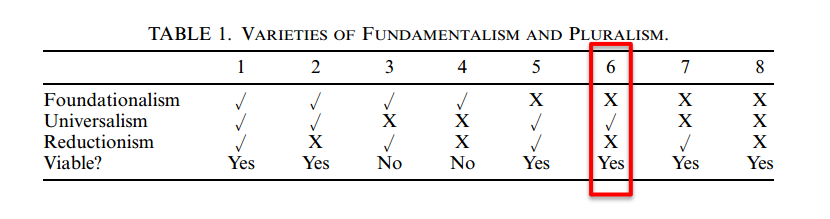

Autonomous Patterns and Scientific Realism
Katherine Brading
Tesis
(1. Introducción)
- Discute el desafío propuesto por McAllister al realismo científico
- Sugiere cómo puede responder el realista científico a los aspectos ontológicos y epistémicos
Tesis
"El realista científico no debería rechazar el pluralismo ontológico de plano, sino que debería explorar versiones de realismo científico que dejen abierta la posibilidad de ciertos tipos de ontología pluralista"
Planteo
- Si nos preguntamos qué conclusiones ontológicas se siguen de este desafío epistémico, llegamos a una forma particular de pluralismo ontológico.
- No es el polimofrismo radical de McAllister
- Pero hay una disputa no resuelta entre pluralistas y fundamentalistas y los pluralistas tienen a su favor que las evidencia empírica actual no es suficiente para un compromiso fundamentalista.
"Ofrezco un enfoque a la ontología de la física que es neutral respecto a las disputas en filosofía de la ciencia"
Outline
- Intro
- Data and Phenomena in the Semantic View of Theories
- Epistemological Lessons
- The Logical Point
- The Scientific Realist Responds
- The Substantive Epistemological Point
- Ontological Lessons
- The Scientific Realist Responds
- Fundamentalism, Pluralism, and Scientific Realism
- Conclusions
3. Epistemological Lessons
3.1 The logical point
McAllister habla en términos de estructura
3.1 The logical point
"¿Qué justifica la afirmación de que la teoría que salva la estructura del fenómeno, captura también la estructura del mundo?"
Brading; p. 381
3.1 The logical point
Argumento lógico:
- Siempre hay un grado de libertad en cómo separamos los datos entre patrones y ruido.
- La relación entre los datos y el fenómeno no es una, sino que una a indefinidamente muchas.
Si el mismo conjunto de datos es evidencia a afavor a una cantidad indefinida de fenómenos con estructuras diferentes, entonces la elección de cómo estructurar el fenómeno no es para nada de abajo hacia arriba, por cómo es el mundo.
3.2. The Scientific Realist Responds
3.2. The Scientific Realist Responds
- La respuesta tradicional es que no hay milagros:
- "Si la teoría no hubiera dado con la estrucutra del mundo, entonces el éxito de la teoría es un milagro"
- Para Brading tiene que haber una respuesta mejor
3.2. The Scientific Realist Responds
Recurre a una analogía con la 1ra ley de Newton.
(Que dice lo siguiente):
Todo cuerpo persevera en su estado de reposo o movimiento uniforme y rectilíneo a no ser que sea obligado a cambiar su estado por fuerzas impresas sobre él.Analogía
- Puedo elegir cualquier cuerpo para definir el estandar del movimiento inercial y después encontrar "funciones de fuerzas" que serán los movimietnos de los cuerpos en movimiento no inercial.
- Esto no hace que la 1ra ley no tenga contenido: no es nada trivial que pueda encontrar un conjunto de marcos inerciales, combinado con uan manera de atribuir fuerza tal que los cuerpos que se muevan uniformemente se consideren sin fuerza y el resto siguiendo las reglas de interacción mutua.
Analogía
- Reconoce la circularidad, pero el hecho que podamos hacer algo así no es para nada trivial y es un hecho sobre el mundo.
- El mundo podría haber sido de tal manera en la que no podríamos haber hecho del todo
Consecuencias de la postura de McAllister
- No hay ningún mundo posible en el que esto hubiera fallado.
- La primera ley no tiene contenido empírico.
El realista contraataca
Robustez
"La robustez de ciertos patrones es, creo, evidencia de una restricción desde abajo hacia arriba sobre cuales patrones en un conjunto de datos son legítimamente elevables al estatus de fenómeno."
p. 832
El punto es que los fenómenos son patrones robustos.
McAllister en la piel de Kant
- Intenta mostrar una alternativa: Es la mente humana, y no el mundo, la responsable en resaltar y dotar de robustez a ciertos patrones.
3.3. The Substantive Epistemological Point
El argumento de McAllister gana tracción cuando concedemos que diferentes fenómenos son robustos en distintos contextos y de acuerdo a intereses variados.
- No nos lleva a la última estructura del mundo.
4. Ontological Lessons
McAllister sostiene que todos los patrones están equitativametne distribuidos en todos lados, en todo momento.
Para Brading es interesante ver qué compromisos ontológicos son consitentes con abandonar la unicidad.
4.1. La respuesta del realista
Quiere discutir un enfoque para la ontología de la física que:
- Sea consistente con abandonar la cláusula de unicidad.
- Neutral respecto al pluralismo ontológico
4.1. La respuesta del realista
Enfoque law-constitutive: Las condiciones necesarias y suficientes para que algo sea un objeto físico, son las que satisfacen las leyes de alguna teoría física.
El enfoque requiere distinguir entre:
- (A) Cada macro objeto es una colección de micropartículas.
- (B) Cada macro objeto es un sistema compuesto* de micro partículas.
(*)Colección de micro particulas que, en y por si mismas, satisfacen las leyes de la micro teoría y cuenta como objeto según la micro teoría.
Esto es muy importante
4.1. La respuesta del realista
- Con esto pretende negar una derucción de tipo por tipo.
- También una reducción ficha por ficha.
Sólo negando que A lleva a B no nos compremete con un antirrealismo.
¡Ontologías pluralistas!
4.2. Fundamentalism, Pluralism, and Scientific Realism
4.2. Fundamentalism, Pluralism, and Scientific Realism
Pluralistas vs. fundamentalistas:
- Fundacionalismo
- Universalismo
- Reduccionismo
Pluralidad de pluralismos

Pluralidad de pluralismos
Brading elije la 6.
Mirar a la física muestra por qué podemos renunciar al fundacionalismo y mantener el universalismo
Dentro de las restricciones de condiciones de consistencia, podemos desarrollar teorías exitosas en un nivel de energía que muestran un nivel de autonomía de las teorías para energías más altas.
p. 837
5. Conclusion
- Este enfoque preserva el realismo científico, a la vez que se toma en serio las partes acertadas del "desafío McAllister"
- La manera correcta de responder al desafío no es un enfoque unitario de la ontología, sino dejar abierto un espacio para el pluralismo.